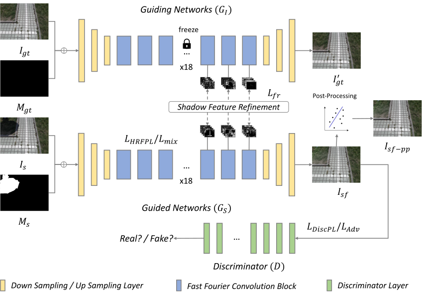
Figure 1. Network architecture of the proposed shadow feature refinement network.
Abstract
In the field of deep learning, has seen significant advancements; however, shadow removal remains a persistent challenge owing to the variable sizes and colors of shadows influenced by lighting conditions. This study proposes a novel shadow feature refinement network (SFR-Net), which leverages supervised learning, feature refinement loss, and knowledge distillation to enhance shadow removal performance. A dedicated post-processing algorithm is further introduced to restore natural color consistency in the generated shadow-free images. We evaluated our method on two public datasets: the adjusted image shadow triplet dataset (ISTD+) and the shadow removal dataset (SRD), which demonstrate strong generalization capabilities under diverse conditions. On ISTD+, our model achieved a root mean square error (RMSE) of 3.4627 and structural similarity index measure (SSIM) of 0.9382 across the entire image. On SRD, it recorded an RMSE of 4.3781 and an SSIM of 0.9341. These comprehensive results show that our approach performs competitively across both shadow and non-shadow regions while setting a promising direction for robust and perceptually natural shadow removal.
Introduction
Shadows cause non-uniform lighting that changes the texture and colors of the shadowed region, and the penumbra makes the shadow boundary hard to define. Shadow removal therefore has to estimate and restore the colors of the shadowed region from those of the non-shadowed region. Image inpainting models are good at this kind of context-aware reconstruction, and a pretrained inpainting network that receives the shadow-free image produces features that describe what the shadowed region should look like.
SFR-Net builds on this observation with two image generation networks derived from an inpainting model. The guided network \(G_S\) receives the shadow image \(I_S\) and its shadow mask \(M_S\) and removes the shadow. The guiding network \(G_I\) has the same structure, receives the ground-truth image \(I_{gt}\) with an empty mask \(M_{gt}\), and reconstructs \(I_{gt}\). The features generated at each layer of \(G_I\) supervise the corresponding layer of \(G_S\).
The main contributions of this study are as follows.
- A supervised shadow removal model that combines image inpainting and knowledge distillation, with two inpainting-based generator architectures and loss functions for efficient learning.
- A post-processing step that learns the correlation between the pixels of the shadow image and the shadow-removed image in the non-shadow region and corrects the pixel values of the entire image, so the overall colors match those of the original image.
- Extensive experiments on the public ISTD+ and SRD datasets, showing performance comparable to state-of-the-art methods.
Method
Shadow Feature Refinement Network
SFR-Net is a generative adversarial network with two generators and one discriminator. The pretrained \(G_I\) takes \(I_{gt}\) and the empty mask \(M_{gt}\) and reconstructs \(I'_{gt}\); \(G_S\) takes \(I_S\) and \(M_S\) and generates the shadow-free image \(I_{sf}\) while comparing its intermediate features with those of \(G_I\). Both generators are LaMa networks built from fast Fourier convolution (FFC) blocks, which let the network use image-wide context from the first layers. The discriminator is the patch-based discriminator of Pix2PixHD. Finally, a post-processing step restores the colors of \(I_{sf}\) to produce the final output \(I_{sf\text{-}pp}\).
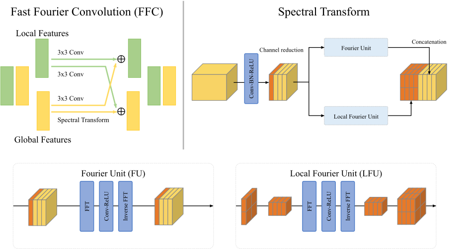
Figure 2. Architecture of the FFC block and spectral transform. The Fourier unit (FU) captures global structure in the frequency domain, and the local Fourier unit (LFU) splits the feature map into four quadrants to enhance local detail.
The guided network \(G_S\) consists of four FFC-based downscale layers, two FFC layers, 18 FFC residual blocks with skip connections, and four FFC-based upscale layers.
Loss Function
The overall objective combines five losses and an R1 gradient penalty:
with \(\alpha = 10\), \(\beta = 30\), \(\gamma = 100\), \(\delta = 10\), \(\lambda_{fr} = 100\), and \(\zeta = 0.001\).
Adversarial loss
The patch discriminator is supervised separately inside and outside the shadow. Each image is divided into \(N\) patches, and \(M_{S,i} \in \{0, 1\}\) indicates whether patch \(i\) belongs to the shadow region. Shadow patches are expected to be changed by the generator and are classified as fake, while non-shadow patches should match the target and are classified as real. A non-saturating adversarial loss with stop gradients \(\mathrm{sg}\) minimizes both the discriminator and generator losses:
High receptive field perceptual loss and discriminator feature matching
\(\mathcal{L}_{HRFPL}\) compares features of a pretrained ResNet with a high receptive field, \(\phi^{HRF}_j\), and \(\mathcal{L}_{fm}\) compares the intermediate features \(D_j\) of the discriminator, which is trained on the same data domain:
Mix loss
L1 compares pixels independently, while the human visual system is more sensitive to luminance, contrast, and structure. The mix loss combines MS-SSIM, computed per \(35 \times 35\) patch \(P\) around its center pixel \(\tilde{p}\) with Gaussian filters of \(\sigma_G \in \{0.5, 1, 2, 4, 8\}\), with a Gaussian-weighted L1 loss:
with \(\alpha = \beta_j = 1\) and \(\gamma_{mix} = 0.025\), which is distinct from the loss weight \(\gamma\) in Eq. (1).
Feature refinement loss
The guided network learns the image representation that the guiding network uses to reconstruct \(I_{gt}\). The activations of \(G_S\) and \(G_I\) at a set of target layers \(\mathcal{L}\) are compared with the L2 distance:
where \(N\) is the number of target layers and \(\oplus\) denotes channel concatenation. With \(\mathcal{L}_{fr}\), the feature maps of \(G_S\) carry more diverse and richer information (Figure 3).
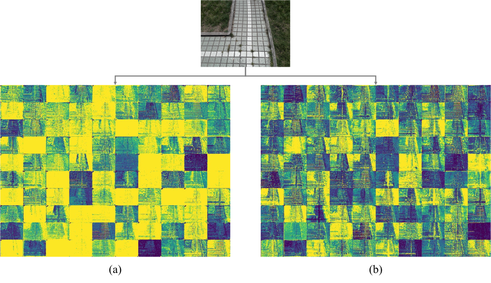
Figure 3. Feature maps of the 20th FFC block of SFR-Net (a) without and (b) with \(\mathcal{L}_{fr}\).
Post-Processing for Color Restoration
The shadow and ground-truth images of a dataset are captured under slightly different conditions, so the model also learns global color changes and alters the overall color of its output. Because \(I_S\) is \(I_{gt}\) with a shadow cast on it, the non-shadow region of \(I_{sf}\) should have the colors of \(I_S\). SFR-Net therefore fits a per-image linear regression on the non-shadow pixels, separately for R, G, and B, and applies it to the whole image:
Experiments
Experimental Setup
- ISTD+: 1,330 training and 540 test triplets (shadow image, shadow-free image, mask) at 640×480.
- SRD: 3,088 image pairs without ground-truth masks; images are resized to 640×480 and masks predicted by DHAN are used for training and evaluation.
- Metrics: RMSE in LAB color space, and PSNR and SSIM in RGB, for the shadow, non-shadow, and whole image regions, computed with the widely used MATLAB evaluation code.
- Implementation: PyTorch 2.0, one NVIDIA Tesla A100 GPU, batch size 4, Adam and Lion optimizers, learning rate \(10^{-3}\) for the generator and \(10^{-4}\) for the discriminator.
Comparison with State-of-the-Art Methods
On ISTD+, SFR-Net achieves the lowest shadow-region RMSE among the compared methods, reducing it from 5.0098 (HomoFormer) to 4.9750, and ranks second in shadow-region PSNR, non-shadow SSIM and PSNR, and whole-image RMSE and PSNR. All baseline numbers are the official results of the respective studies; SP+M+I Net and FusionNet output \(256 \times 256\) images, which are resized to \(640 \times 480\). On SRD, it records an RMSE of 3.5184 in the shadow region and 4.3781 on the whole image. Bold and underline mark the best and second-best results.
Table 1. Quantitative comparison on the ISTD+ dataset.
| Method | Shadow Region | Non-Shadow Region | All | ||||||
|---|---|---|---|---|---|---|---|---|---|
| RMSE↓ | SSIM↑ | PSNR↑ | RMSE↓ | SSIM↑ | PSNR↑ | RMSE↓ | SSIM↑ | PSNR↑ | |
| Shadow Image | 30.4831 | 0.9265 | 20.8095 | 3.1493 | 0.9552 | 33.8855 | 12.4080 | 0.8747 | 20.2209 |
| ShadowDiffusion | 5.8667 | 0.9782 | 35.8192 | 3.2892 | 0.9253 | 32.8163 | 3.8768 | 0.8995 | 30.3881 |
| HomoFormer | 5.0098 | 0.9840 | 37.4862 | 3.1282 | 0.9350 | 33.3300 | 3.5245 | 0.9161 | 31.3985 |
| Inpaint4Shadow | 6.5203 | 0.9621 | 35.2136 | 4.4683 | 0.8234 | 29.8008 | 4.9124 | 0.7783 | 28.2474 |
| ShadowFormer | 5.0755 | 0.9864 | 38.0692 | 2.8663 | 0.9550 | 35.1463 | 3.3461 | 0.9387 | 32.7827 |
| BMNet | 5.5477 | 0.9865 | 36.8070 | 2.9791 | 0.9576 | 34.4725 | 3.5375 | 0.9410 | 31.8521 |
| SG-ShadowNet | 6.0283 | 0.9844 | 35.9620 | 3.7969 | 0.9503 | 32.7644 | 4.2651 | 0.9304 | 30.5036 |
| FusionNet (resize) | 6.6084 | 0.9605 | 34.7492 | 4.6387 | 0.8038 | 29.1078 | 5.0445 | 0.7567 | 27.6059 |
| SP+M+I Net (resize) | 6.2019 | 0.9774 | 35.7971 | 4.3615 | 0.9071 | 30.8697 | 4.7650 | 0.8800 | 29.1754 |
| DHAN | 8.6784 | 0.9833 | 32.4535 | 6.7880 | 0.9433 | 26.2158 | 7.2224 | 0.9244 | 24.8628 |
| InstanceShadowDiffusion | 5.0735 | 0.9865 | 37.7354 | 3.1269 | 0.9514 | 34.3006 | 3.5342 | 0.9356 | 32.1079 |
| SFR-Net (Ours) | 4.9750 | 0.9865 | 37.8747 | 3.0631 | 0.9550 | 34.5793 | 3.4627 | 0.9382 | 32.3872 |
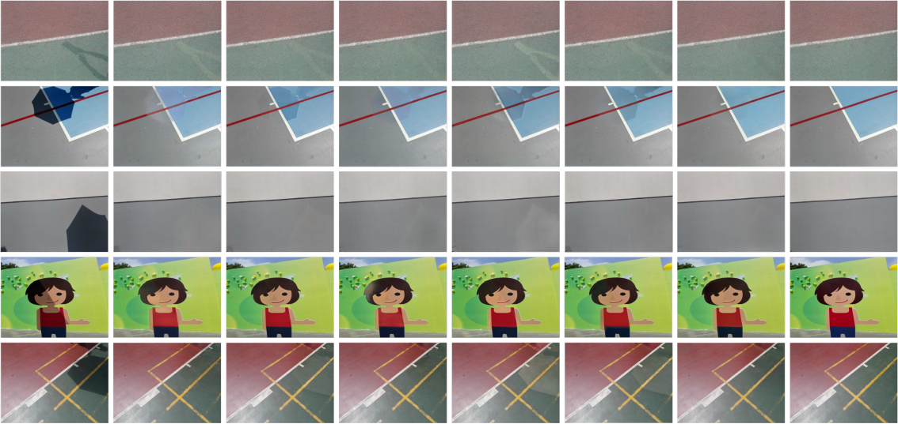
Figure 4. Qualitative results on ISTD+. (a) Input, (b) ShadowDiffusion, (c) HomoFormer, (d) ShadowFormer, (e) BMNet, (f) Ours, (g) InstanceShadowDiffusion, (h) GT, from left to right.
Table 2. Quantitative comparison on the SRD dataset.
| Method | Shadow Region | Non-Shadow Region | All | ||||||
|---|---|---|---|---|---|---|---|---|---|
| RMSE↓ | SSIM↑ | PSNR↑ | RMSE↓ | SSIM↑ | PSNR↑ | RMSE↓ | SSIM↑ | PSNR↑ | |
| Shadow Image | 17.3859 | 0.8694 | 18.7869 | 2.7657 | 0.9683 | 30.2704 | 16.3193 | 0.8206 | 18.0297 |
| ShadowDiffusion | 4.1636 | 0.9662 | 31.7264 | 2.5340 | 0.9651 | 31.2735 | 5.3763 | 0.9222 | 27.8394 |
| HomoFormer | 3.4217 | 0.9676 | 33.1020 | 2.2344 | 0.9502 | 31.9545 | 4.5635 | 0.8988 | 28.8686 |
| Inpaint4Shadow | 3.8828 | 0.9713 | 32.2222 | 2.1370 | 0.9739 | 32.7109 | 4.8368 | 0.9324 | 28.7194 |
| ShadowFormer | 3.5833 | 0.9739 | 33.0057 | 1.9617 | 0.9758 | 33.7010 | 4.4366 | 0.9374 | 29.6462 |
| BMNet | 3.6952 | 0.9656 | 32.3086 | 2.3587 | 0.9449 | 31.0833 | 4.8848 | 0.8889 | 27.9986 |
| SG-ShadowNet | 3.7124 | 0.9733 | 32.5460 | 1.9659 | 0.9748 | 33.9631 | 4.4926 | 0.9340 | 29.6179 |
| FusionNet (resize) | 4.2753 | 0.9569 | 31.4184 | 2.9092 | 0.9277 | 29.7585 | 5.8187 | 0.8606 | 26.9399 |
| InstanceShadowDiffusion | 6.1959 | 0.9705 | 34.1167 | 3.6498 | 0.9611 | 32.4489 | 4.4195 | 0.9259 | 29.4738 |
| DHAN | 3.9867 | 0.9622 | 31.6425 | 2.5106 | 0.9405 | 30.6378 | 5.2274 | 0.8821 | 27.5300 |
| SFR-Net (Ours) | 3.5184 | 0.9744 | 33.1909 | 1.9665 | 0.9727 | 33.7399 | 4.3781 | 0.9341 | 29.8287 |
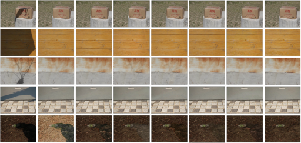
Figure 5. Qualitative results on SRD. (a) Input, (b) ShadowDiffusion, (c) HomoFormer, (d) ShadowFormer, (e) BMNet, (f) Ours, (g) InstanceShadowDiffusion, (h) GT, from left to right.
Table 3 measures how well each method preserves the non-shadow region of the original shadow image \(I_S\). SFR-Net has the highest SSIM on both datasets and the best RMSE and PSNR on SRD, while InstanceShadowDiffusion achieves the best RMSE and PSNR on ISTD+.
Table 3. Reconstruction of the non-shadow region of the original shadow image \(I_S\).
| Method | ISTD+ | SRD | ||||
|---|---|---|---|---|---|---|
| RMSE↓ | SSIM↑ | PSNR↑ | RMSE↓ | SSIM↑ | PSNR↑ | |
| ShadowDiffusion | 2.495 | 0.9424 | 34.4869 | 2.7020 | 0.9755 | 30.3506 |
| HomoFormer | 1.6334 | 0.9863 | 38.7659 | 3.0385 | 0.9457 | 28.8426 |
| Inpaint4Shadow | 3.8885 | 0.8237 | 30.2485 | 2.5566 | 0.9617 | 30.0065 |
| ShadowFormer | 1.2962 | 0.9909 | 41.0936 | 2.4080 | 0.9649 | 30.6063 |
| BMNet | 1.4613 | 0.9928 | 40.0063 | 2.6261 | 0.9633 | 29.9894 |
| SG-ShadowNet | 2.5336 | 0.9889 | 36.6816 | 2.5368 | 0.9633 | 30.5528 |
| FusionNet (resize) | 4.4263 | 0.8033 | 29.1979 | 3.4363 | 0.9254 | 28.0174 |
| SP+M+I Net (resize) | 3.9765 | 0.9199 | 31.1807 | – | – | – |
| DHAN | 6.1279 | 0.9824 | 27.5092 | 2.8048 | 0.95852 | 29.4690 |
| InstanceShadowDiffusion | 1.2365 | 0.9933 | 42.9716 | 4.9513 | 0.9641 | 29.4994 |
| SFR-Net (Ours) | 1.6281 | 0.9941 | 41.8093 | 2.3307 | 0.9859 | 32.8520 |
Ablation Study
Where to Apply Knowledge Distillation
The 18 FFC residual blocks are divided into shallow, middle, and deep stages, and \(\mathcal{L}_{fr}\) is applied to different combinations of them. Every configuration outperforms training without \(\mathcal{L}_{fr}\), and applying it to the deep stage gives the best results. In early layers, the features of \(I_S\) and \(M_S\) have not yet converged, so refinement with the ground-truth features helps little; in deep layers they have, and the features of \(G_S\) gradually become similar to those of the ground-truth image.
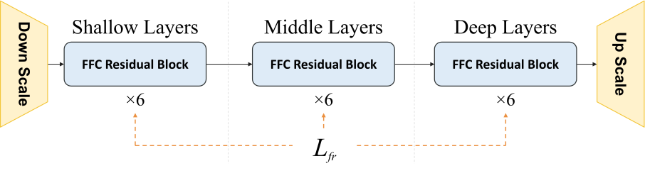
Figure 6. Division of layers into three stages for analyzing the effectiveness of knowledge distillation.
Table 4. \(\mathcal{L}_{fr}\) applied to each stage (ISTD+, without post-processing).
| Configuration | Shadow Region | Non-Shadow Region | All | ||||||
|---|---|---|---|---|---|---|---|---|---|
| RMSE↓ | SSIM↑ | PSNR↑ | RMSE↓ | SSIM↑ | PSNR↑ | RMSE↓ | SSIM↑ | PSNR↑ | |
| Config. #1 (Shallow Only) | 6.0479 | 0.9852 | 35.9776 | 3.6449 | 0.9515 | 32.5604 | 4.1722 | 0.9332 | 30.2424 |
| Config. #2 (Middle Only) | 5.5084 | 0.9858 | 36.8616 | 3.4796 | 0.9542 | 33.7787 | 3.9229 | 0.9369 | 31.4653 |
| Config. #3 (Deep Only) | 5.2107 | 0.9862 | 37.4321 | 3.2502 | 0.9542 | 34.0711 | 3.6675 | 0.9372 | 31.8471 |
| Config. #4 (Shallow & Middle) | 5.6130 | 0.9849 | 36.5651 | 3.3170 | 0.9545 | 33.6416 | 3.8253 | 0.9360 | 31.3321 |
| Config. #5 (Middle & Deep) | 5.4761 | 0.9857 | 37.1288 | 3.3211 | 0.9518 | 34.0083 | 3.7688 | 0.9341 | 31.7260 |
| Config. #6 (All Stages) | 5.4430 | 0.9854 | 36.8779 | 3.3861 | 0.9540 | 33.6865 | 3.8286 | 0.9361 | 31.3961 |
| Without \(\mathcal{L}_{fr}\) | 6.0975 | 0.9849 | 35.4867 | 3.7747 | 0.9533 | 31.7673 | 4.2855 | 0.9347 | 29.6694 |
Contribution of Each Loss
\(\mathcal{L}_{LaMa}\) is the original LaMa objective (adversarial, HRFPL, feature matching, and L1 losses). Adding \(\mathcal{L}_{mix}\), which compares luminance and contrast, mainly reduces the color difference in the non-shadow region, while adding \(\mathcal{L}_{fr}\) gives a higher PSNR in the shadow region and over the whole image. Combining both achieves the best performance in all regions and metrics.
Table 5. Effect of \(\mathcal{L}_{mix}\) and \(\mathcal{L}_{fr}\) (Config. #3, ISTD+).
| \(\mathcal{L}_{LaMa}\) | \(\mathcal{L}_{mix}\) | \(\mathcal{L}_{fr}\) | Shadow Region | Non-Shadow Region | All | |||||||
|---|---|---|---|---|---|---|---|---|---|---|---|---|
| RMSE↓ | SSIM↑ | PSNR↑ | RMSE↓ | SSIM↑ | PSNR↑ | RMSE↓ | SSIM↑ | PSNR↑ | ||||
| ✓ | 7.4366 | 0.9774 | 34.0190 | 5.1019 | 0.9249 | 29.7530 | 5.6161 | 0.8976 | 27.8767 | |||
| ✓ | ✓ | 6.0975 | 0.9849 | 35.4867 | 3.7747 | 0.9533 | 31.7673 | 4.2855 | 0.9347 | 29.6694 | ||
| ✓ | ✓ | 6.4203 | 0.9827 | 35.6343 | 4.1685 | 0.9472 | 31.5645 | 4.6311 | 0.9263 | 29.7403 | ||
| ✓ | ✓ | ✓ | 5.2107 | 0.9862 | 37.4321 | 3.2502 | 0.9542 | 34.0711 | 3.6675 | 0.9372 | 31.8471 | |
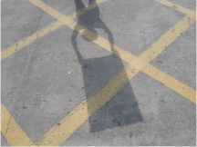


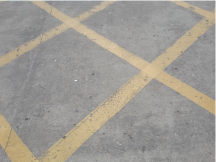
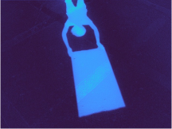
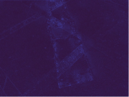

Figure 7. Matte images of the residuals with respect to the ground truth. With \(\mathcal{L}_{fr}\), the residual left by the shadow is smaller and more consistent with the ground-truth structure.
Post-Processing Analysis
We compare six algorithms (linear regression, polynomial regression, histogram matching, color transfer, gradient boosting, and gamma correction) in the BGR and LAB color spaces. Post-processing in BGR space generally works better than in LAB space. Linear regression in BGR space, our default, reduces the whole-image RMSE from 3.6675 to 3.4627 and the shadow-region RMSE from 5.2107 to 4.9750; similar improvements are observed on SRD. Gradient boosting in BGR space scores slightly higher, but on SRD it takes about 2.517 s per image compared with 0.046 s for linear regression, a 54-fold increase in processing time, so linear regression offers the best trade-off between performance and efficiency.
Table 6. Post-processing techniques on the ISTD+ dataset.
| Method | Shadow Region | Non-Shadow Region | All | Time (s) | ||||||
|---|---|---|---|---|---|---|---|---|---|---|
| RMSE↓ | SSIM↑ | PSNR↑ | RMSE↓ | SSIM↑ | PSNR↑ | RMSE↓ | SSIM↑ | PSNR↑ | ||
| SFR-Net (default) | 5.2107 | 0.9862 | 37.4321 | 3.2502 | 0.9542 | 34.0711 | 3.6675 | 0.9372 | 31.8471 | – |
| BGR space | ||||||||||
| + Linear regression | 4.9750 | 0.9865 | 37.8747 | 3.0631 | 0.9550 | 34.5793 | 3.4627 | 0.9382 | 32.3872 | 0.068 |
| + Polynomial regression | 5.2444 | 0.9860 | 37.6492 | 3.2386 | 0.9553 | 34.3712 | 3.6599 | 0.9380 | 32.1919 | 0.187 |
| + Histogram matching | 10.8398 | 0.9698 | 32.9278 | 3.2208 | 0.9541 | 34.2324 | 5.0366 | 0.9185 | 29.9032 | 0.050 |
| + Color transfer | 9.2768 | 0.976 | 33.6943 | 3.2208 | 0.9541 | 34.2324 | 4.5661 | 0.9260 | 30.3646 | 0.056 |
| + Gradient boosting | 5.0741 | 0.9862 | 37.7767 | 2.9127 | 0.9563 | 35.0749 | 3.3700 | 0.9390 | 32.6578 | 2.513 |
| + Gamma correction | 8.4250 | 0.9806 | 34.8413 | 3.2208 | 0.9541 | 34.2324 | 4.3524 | 0.9300 | 30.9087 | 0.043 |
| LAB space | ||||||||||
| + Linear regression | 5.0013 | 0.9857 | 37.7963 | 3.1621 | 0.9505 | 34.3575 | 3.5482 | 0.9326 | 32.2254 | 0.054 |
| + Polynomial regression | 5.1281 | 0.9853 | 37.6323 | 3.3148 | 0.9501 | 34.0300 | 3.6971 | 0.9319 | 31.9582 | 0.158 |
| + Histogram matching | 11.5396 | 0.9672 | 32.3056 | 3.2834 | 0.9523 | 34.1094 | 5.2168 | 0.9139 | 29.5462 | 0.059 |
| + Color transfer | 9.4752 | 0.9755 | 33.5719 | 3.2834 | 0.9523 | 34.1094 | 4.6691 | 0.9227 | 30.2466 | 0.059 |
| + Gradient boosting | 5.0753 | 0.9862 | 37.7766 | 2.9127 | 0.9562 | 35.0753 | 3.3712 | 0.9390 | 32.6574 | 1.937 |
| + Gamma correction | 8.5674 | 0.9792 | 34.7292 | 3.2834 | 0.9523 | 34.1094 | 4.4338 | 0.9267 | 30.7879 | 0.048 |
Table 7. Post-processing techniques on the SRD dataset.
| Method | Shadow Region | Non-Shadow Region | All | Time (s) | ||||||
|---|---|---|---|---|---|---|---|---|---|---|
| RMSE↓ | SSIM↑ | PSNR↑ | RMSE↓ | SSIM↑ | PSNR↑ | RMSE↓ | SSIM↑ | PSNR↑ | ||
| SFR-Net (default) | 3.7840 | 0.9719 | 32.9293 | 2.5129 | 0.9690 | 33.5797 | 5.2807 | 0.9266 | 29.4810 | – |
| BGR space | ||||||||||
| + Linear regression | 3.5184 | 0.9744 | 33.1909 | 1.9665 | 0.9727 | 33.7399 | 4.3781 | 0.9341 | 29.8287 | 0.046 |
| + Polynomial regression | 3.8751 | 0.9719 | 32.8250 | 2.4020 | 0.9703 | 33.6360 | 5.1542 | 0.9277 | 29.4965 | 0.146 |
| + Histogram matching | 6.8171 | 0.9445 | 28.2236 | 1.9761 | 0.9743 | 33.7197 | 6.9081 | 0.9037 | 26.4355 | 0.030 |
| + Color transfer | 6.0244 | 0.9515 | 29.0468 | 1.9754 | 0.9743 | 33.7206 | 6.2467 | 0.9106 | 27.0794 | 0.036 |
| + Gradient boosting | 3.4189 | 0.9731 | 33.4204 | 1.7751 | 0.9754 | 34.8569 | 4.1269 | 0.9346 | 30.4812 | 2.517 |
| + Gamma correction | 5.4126 | 0.9579 | 29.9249 | 1.9748 | 0.9743 | 33.7221 | 5.7732 | 0.9175 | 27.6969 | 0.022 |
| LAB space | ||||||||||
| + Linear regression | 3.5340 | 0.9720 | 33.0943 | 2.1449 | 0.9710 | 33.7517 | 4.6310 | 0.9288 | 29.7129 | 0.052 |
| + Polynomial regression | 3.6287 | 0.9716 | 32.8703 | 2.1404 | 0.9707 | 33.7016 | 4.6761 | 0.9283 | 29.5851 | 0.158 |
| + Histogram matching | 6.8738 | 0.9438 | 28.0923 | 1.9940 | 0.9738 | 33.6939 | 6.9104 | 0.9024 | 26.3554 | 0.034 |
| + Color transfer | 6.0680 | 0.9509 | 28.9820 | 1.9938 | 0.9738 | 33.6943 | 6.2952 | 0.9094 | 27.0294 | 0.040 |
| + Gradient boosting | 3.4049 | 0.9725 | 33.3698 | 1.8277 | 0.9732 | 34.6197 | 4.1727 | 0.9314 | 30.3473 | 1.979 |
| + Gamma correction | 5.4568 | 0.9556 | 29.8500 | 1.9932 | 0.9738 | 33.6958 | 5.8259 | 0.9147 | 27.6307 | 0.028 |


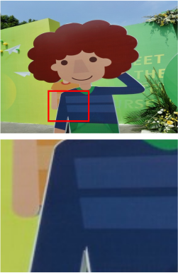
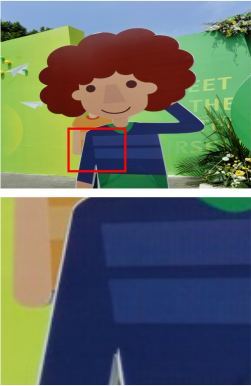
Figure 8. Color histograms with and without post-processing: (a) blue, (b) green, (c) red. After linear-regression post-processing, the distribution aligns more closely with the ground truth.

Figure 9. Post-processing algorithms for color restoration. (a) \(I_{sf}\), (b) linear regression, (c) polynomial regression, (d) color transfer (Reinhard et al.), (e) gradient boosting, (f) gamma correction, (g) \(I_S\), from left to right. Linear regression blends the previously shadowed and non-shadowed regions seamlessly, while histogram matching and color transfer can introduce color artifacts.
Conclusion
SFR-Net learns shadow removal through knowledge distillation of feature maps: the ground-truth image is passed through a pretrained inpainting network, and its features supervise those of the shadow removal network. Together with the MS-SSIM, L1, and feature refinement losses and a linear-regression post-processing for color restoration, SFR-Net effectively reconstructs shadow-free images.
The method has several limitations. The model is trained on ISTD+ and SRD and may not generalize to unseen lighting conditions, object types, noisy backgrounds, or complex overlapping shadows. It depends on paired data, and the post-processing step is separate from the network and is not optimized jointly. Future work will explore self-supervised or weakly supervised learning to reduce the dependence on paired data, and an end-to-end architecture that integrates color correction into the network.
BibTeX
@article{han2025sfrnet,
title = {Shadow Feature Refinement Network: Progressive Feature Refinement based on Knowledge Distillation for Effective Shadow Removal},
author = {Donghyun Han and Byoung-dai Lee},
journal = {Multimedia Systems},
volume = {31},
pages = {449},
year = {2025},
doi = {10.1007/s00530-025-02036-5},
eprint = {2610.05325},
archivePrefix = {arXiv}
}